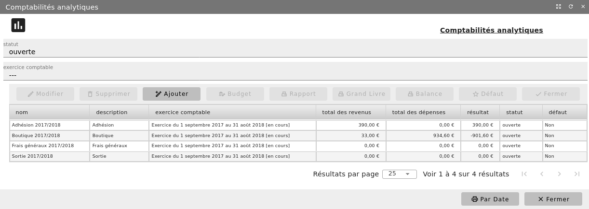
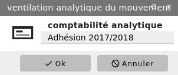

Comptabilité analytique¶
Pour réaliser une analyse financière des différentes activités de votre structure et déterminer le résultat de chacune d’elles, vous pouvez mettre en place une comptabilité analytique.
Menu Administration/Modules(conf.)/Configuration comptable
Après avoir ouvert l’onglet « Paramètres » - bouton « Modifier », cochez le paramètre Comptabilité analytique. A noter qu’en activant ce paramètre, toutes les charges et les produits devront obligatoirement être repris en comptabilité analytique.
La comptabilité analytique proposée par le logiciel est une version simplifiée. En effet, il n’est pas possible de ventiler une charge ou un produit sur plusieurs codes analytiques.
Les codes analytiques¶
Menu Comptabilité/Gestion comptable/Comptabilités analytiques
Vous accédez à la liste des codes analytiques créés.
Depuis cet écran vous pouvez créer, modifier ou supprimer un code analytique.
Chaque code a un titre, un descriptif et un statut (ouvert ou clôturé). En mode « liste », figure le résultat comptable (les produits diminués des charges) de chaque code analytique.


Par défaut, un filtrage vous permet de ne voir que les codes analytiques ouverts. Vous pouvez paramétrer le filtre à l’aide des boutons de liste.
Imputation analytique d’une charge ou d’un produit¶
Menu Comptabilité/Gestion comptable/Ecritures comptables
Si vous avez des codes analytiques ouverts, vous pouvez imputer une charge ou un produit sur l’un d’entre eux.


Que l’écriture correspondante soit validée ou non, affichez cette écriture et éditez-la. Sélectionnez le mouvement relatif à la charge ou au produit à imputer en analytique et bouton « Modifier ». Renseignez le code analytique de rattachement.
Il est aussi possible de réaliser cette imputation par lot. Sélectionnez les mouvements à affecter et cliquez sur le bouton Analytique. Choisissez alors le nouveau code à utiliser pour l’ensemble des mouvements (charges ou produits) sélectionnés.
Impressions analytiques¶
Depuis la liste des codes analytiques, vous pouvez réaliser un rapport type « Compte de résultat de comptabilité analytique ». Pour cela, affichez les codes analytiques. Sélectionnez-les (un ou plusieurs) et cliquez sur le bouton « Rapport ». Tout comme le Compte de résultat de la Comptabilité générale, ce rapport reprend pour chaque code analytique sélectionné, le montant des charges et des produits ainsi que le budget. Cela permet de comparer, là encore le résultat réel d’une activité au résultat attendu.